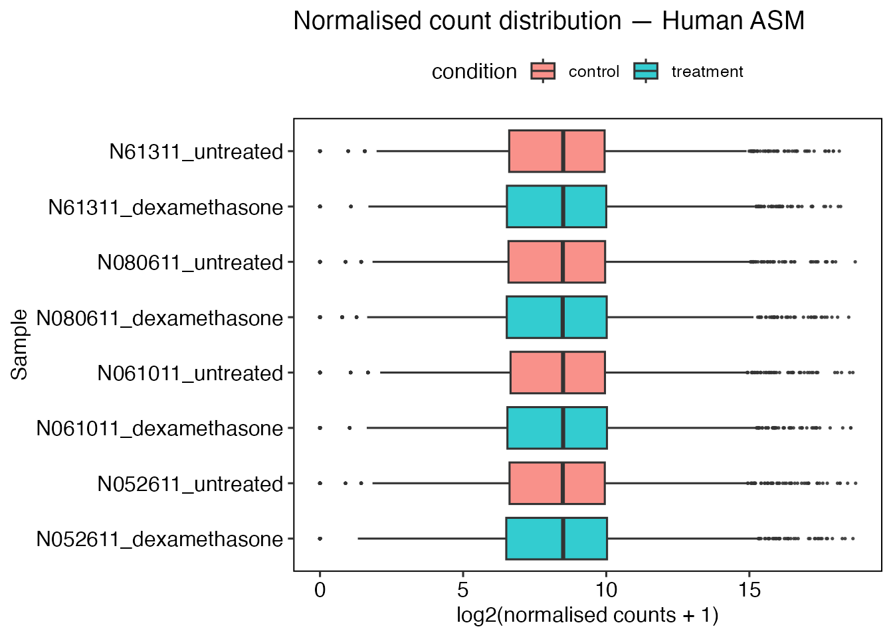
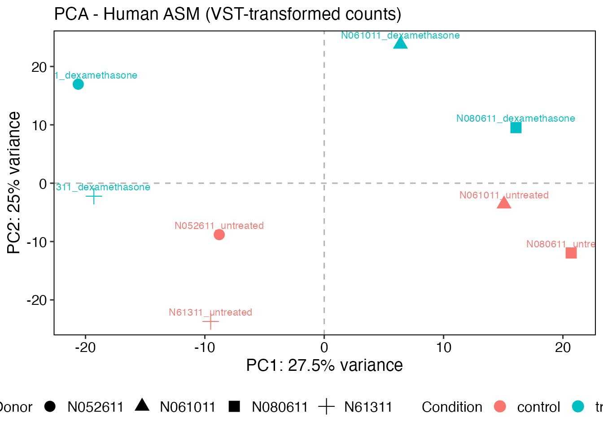
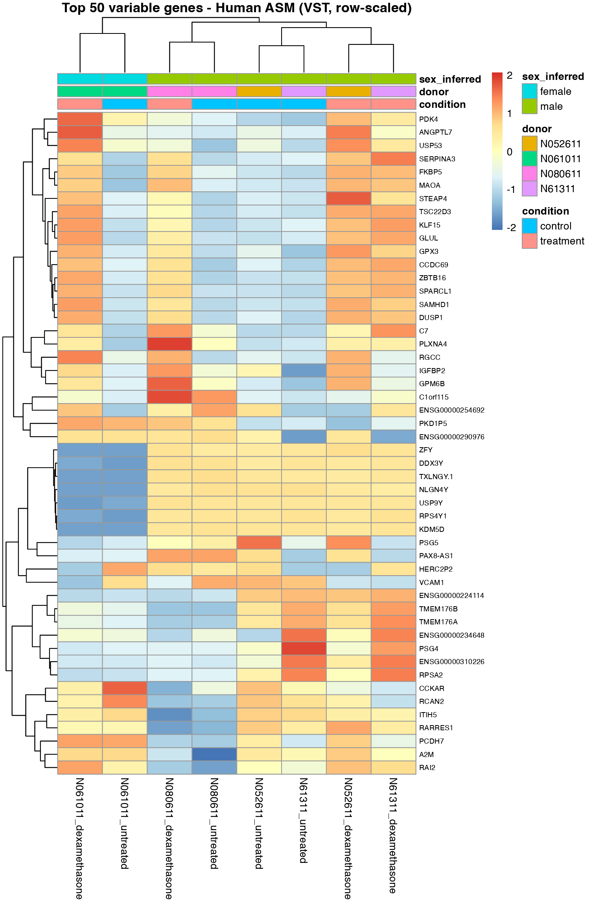

Exploratory Data Analysis
In this section we do not perform statistical tests. The goal is quality control: check count distributions, detect technical outliers, and confirm that samples cluster as expected before committing to differential expression analysis.
Estimate Size Factors
Library sizes (total mapped reads) differ between samples due to technical variation in sequencing depth. DESeq2's median-of-ratios normalisation corrects for this by computing a size factor per sample. Size factors close to 1.0 indicate balanced libraries; values far from 1.0 suggest uneven sequencing depth and warrant investigation.
Code
| sample | size_factor |
|---|---|
| N052611_dexamethasone | 0.670 |
| N052611_untreated | 1.177 |
| N061011_dexamethasone | 0.944 |
| N061011_untreated | 0.918 |
| N080611_dexamethasone | 1.395 |
| N080611_untreated | 1.175 |
| N61311_dexamethasone | 0.896 |
| N61311_untreated | 1.026 |
Distribution of Normalised Counts
Boxplots of log2-normalised counts per sample provide a quick visual check that all samples have comparable expression distributions. After normalisation, boxes should overlap substantially. A sample that is a clear outlier in median or spread may indicate a failed library or mislabelled sample.
📌 Remember: These normalised counts are for visualisation only. Always feed DESeq2 raw integer counts.
Code
normalized_counts <- counts(dds, normalized = TRUE)
counts_norm <- reshape2::melt(
normalized_counts,
varnames = c("gene_id", "sample"),
value.name = "counts"
)
counts_norm <- inner_join(
counts_norm,
as.data.frame(colData(dds)),
by = "sample"
)
dir.create(file.path(git_root, "results", "human", "plots"), recursive = TRUE, showWarnings = FALSE)
distribution <- ggplot(counts_norm,
aes(x = sample,
y = log2(counts + 1),
fill = condition)) +
geom_boxplot(outlier.size = 0.3, alpha = 0.8) +
coord_flip() +
theme_pubr(border = TRUE) +
xlab("Sample") +
ylab("log2(normalised counts + 1)") +
ggtitle("Normalised count distribution — Human ASM")
distribution
Variance-Stabilising Transformation
The plots below compare samples to each other, and for that the counts need one more step. In raw or normalised counts the highly expressed genes vary far more in absolute terms than quiet ones, so they would dominate any distance or PCA calculation. The variance-stabilising transformation (VST) removes that dependence between a gene’s mean and its variance, so every gene contributes on a comparable scale (Anders & Huber, 2010).
blind = TRUE computes the transformation ignoring the experimental design. That is
what you want for QC: an unbiased view of how samples relate, not one shaped by the answer
you are hoping for. Use blind = FALSE only when the transformed values feed a model that
already accounts for the design.
Principal Component Analysis (PCA)
PCA reduces the high-dimensional expression space (one dimension per gene) to a small number of principal components that capture the largest sources of variance in the data. Inspect whether the treatment separates samples, and whether donor identity contributes to the remaining structure.
If a technical variable (batch, sequencing run, RNA quality) — or, here, donor — dominates PC1, that variance should be accounted for in the design before differential expression analysis (Leek et al., 2010).
Code
pca_data <- plotPCA(vsd,
intgroup = c("sample", "condition", "donor"),
returnData = TRUE)
pct_var <- round(100 * attr(pca_data, "percentVar"), 1)
PCAPlot <- ggplot(pca_data, aes(x = PC1,
y = PC2,
color = condition,
shape = donor,
label = sample)) +
geom_point(size = 4) +
geom_text(vjust = -0.8, size = 3, show.legend = FALSE) +
geom_hline(yintercept = 0, linetype = "dashed", alpha = 0.3) +
geom_vline(xintercept = 0, linetype = "dashed", alpha = 0.3) +
theme_pubr(border = TRUE) +
theme(
axis.text = element_text(size = 12),
axis.title = element_text(size = 14),
legend.text = element_text(size = 12),
legend.position = "bottom"
) +
labs(
x = paste0("PC1: ", pct_var[1], "% variance"),
y = paste0("PC2: ", pct_var[2], "% variance"),
title = "PCA - Human ASM (VST-transformed counts)",
color = "Condition",
shape = "Donor"
)
PCAPlot
Code
How to read this plot. Each point is one sample; points close together have similar overall expression. Check the % variance printed on each axis first — it tells you how much of the total variation that axis carries, so a separation on PC1 means more than the same-looking separation on PC3. Here colour encodes treatment and shape encodes donor. If treatment separates cleanly on one axis while donors are spread along another, that is the classic signature of a paired design: a consistent treatment effect on top of donor-to-donor baseline differences.
Top Variable Genes Heatmap
Clustering the 50 most variable genes across samples provides a gene-level view of the structure in the data. Truly treatment-responsive genes should show block structure by condition. This heatmap also helps reveal whether donor identity contributes strongly to the top variable genes.
Row-scaling (z-score per gene) is applied so that highly expressed genes do not visually dominate over lowly expressed ones.
Code
topVarGenes <- head(order(rowVars(assay(vsd)), decreasing = TRUE), 50)
df_anno <- as.data.frame(colData(vsd)[, c("condition", "donor"), drop = FALSE])
# The metadata does not record donor sex, but the data do: Y-chromosome genes are
# expressed only in cells from male donors.
y_genes <- intersect(c("RPS4Y1", "DDX3Y", "KDM5D", "USP9Y"), rownames(vsd))
y_expr <- colMeans(assay(vsd)[y_genes, , drop = FALSE])
df_anno$sex_inferred <- ifelse(y_expr > mean(range(y_expr)), "male", "female")
heat_plot <- pheatmap(
assay(vsd)[topVarGenes, ],
cluster_cols = TRUE,
cluster_rows = TRUE,
scale = "row",
clustering_distance_rows = "euclidean",
clustering_distance_cols = "euclidean",
annotation_col = df_anno,
show_colnames = TRUE,
show_rownames = TRUE,
fontsize_row = 7,
main = "Top 50 variable genes - Human ASM (VST, row-scaled)"
)
heat_plot
Code
## agg_png
## 2📘 Note: Rows are gene symbols (from the human reference), so they can be used directly in the enrichment analysis (script 03) with no ID conversion step. A small number of genes have no agreed symbol yet, and GENCODE gives those its ENSEMBL identifier as the name instead; those rows simply will not match anything in the gene set databases.
-
Names ending in
.1,.2, … (e.g.TXLNGY.1): a few symbols belong to more than one gene ID in the annotation, so R made the row names unique by appending a number. -
Rows named
ENSG…: these genes have no agreed symbol yet, so the annotation uses their ENSEMBL identifier as the name. They are real genes, just unnamed ones. -
Sex-linked genes (e.g.
RPS4Y1,DDX3Y,KDM5D,USP9Y): the four donors are not all the same sex (thesex_inferredbar is derived from these genes), so these genes are among the most “variable” in the whole dataset — a donor property, unrelated to dexamethasone.
Most-variable is not most-relevant: the drug-response rows (look for FKBP5,
ZBTB16, GPX3) sit next to rows that only separate donors. That is why the next notebook tests a
specific contrast instead of trusting variance.
How to read this heatmap:
- Each row is a gene, each column is a sample
- Colours show the z-score (row-scaled expression) — red = higher than average for that gene, blue = lower
- The dendrograms show hierarchical clustering — samples/genes that behave similarly are grouped together
What to look for:
- Clear colour blocks by condition → the treatment has a strong, consistent transcriptional effect
- Whether samples cluster by donor instead of (or in addition to) treatment — a visual argument for the paired design